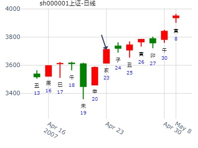
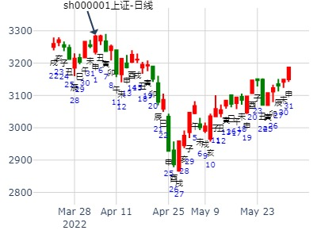
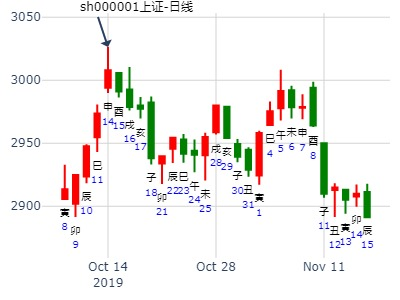
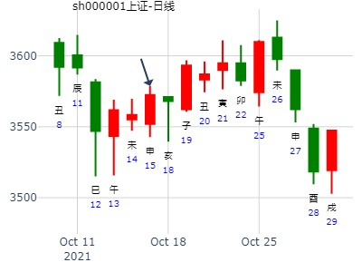

主帖标题: 关注一2322278本周涨 手摇卦
公历时间：2020年1月13日7时22分
干 支：己亥年 丁丑月 乙卯日 庚辰时
旬 空：辰巳 申酉 子丑 申酉
艮宫：艮为山（六冲）
玄武 ▄▄▄▄▄ 官鬼丙寅木 世
白虎 ▄▄ ▄▄ 妻财丙子水
螣蛇 ▄▄ ▄▄ 兄弟丙戌土
勾陈 ▄▄▄▄▄ 子孙丙申金 应
朱雀 ▄▄ ▄▄ 父母丙午火
青龙 ▄▄ ▄▄ 兄弟丙辰土
张三汉加密补码，可能是000888
测000652泰达股份在2020年2月份走势
公历起卦时间：2020年1月25日14时49分 (手工指定)
干支：己亥年 丁丑月 丁卯日 丁未时 （日空：戌亥）
艮宫：艮为山 (六冲) 艮宫：艮为山 (六冲)
六神 伏神 本 卦 变 卦
青龙 官鬼丙寅木 ▅▅▅▅▅ 世 官鬼丙寅木 ▅▅▅▅▅ 世
玄武 妻财丙子水 ▅▅ ▅▅ 妻财丙子水 ▅▅ ▅▅
白虎 兄弟丙戌土 ▅▅ ▅▅ 兄弟丙戌土 ▅▅ ▅▅
腾蛇 子孙丙申金 ▅▅▅▅▅ 应 子孙丙申金 ▅▅▅▅▅ 应
勾陈 父母丙午火 ▅▅ ▅▅ 父母丙午火 ▅▅ ▅▅
朱雀 兄弟丙辰土 ▅▅ ▅▅ 兄弟丙辰土 ▅▅ ▅▅
证券下周-风生水起手工
时间: 2025-01-11 08:18
干支: 甲辰年丁丑月庚辰日庚辰时 (旬空: 申酉 )
艮静卦
腾蛇 ▅▅▅▅▅ 官鬼寅木 世
勾陈 ▅▅ ▅▅ 妻财子水
朱雀 ▅▅ ▅▅ 兄弟戌土
青龙 ▅▅▅▅▅ 子孙申金 应
玄武 ▅▅ ▅▅ 父母午火
白虎 ▅▅ ▅▅ 兄弟辰土
个股年卦：中信证券600030乙未年行情 艮为山静卦
时间: 2015-02-06 3:51
干支: 乙未年戊寅月癸丑日 (旬空: 寅卯 )
艮静卦
白虎 ▅▅▅▅▅ 官鬼寅木 世
腾蛇 ▅▅ ▅▅ 妻财子水
勾陈 ▅▅ ▅▅ 兄弟戌土
朱雀 ▅▅▅▅▅ 子孙申金 应
青龙 ▅▅ ▅▅ 父母午火
玄武 ▅▅ ▅▅ 兄弟辰土
午月财破，暴跌。
申月世月破，暴跌。
试测上证2.24收盘走势？
公历起卦时间：2021年2月24日7时10分 (电脑自动)
干支：辛丑年 庚寅月 癸卯日 丙辰时 （日空：辰巳）
艮宫：艮为山 (六冲) 艮宫：艮为山 (六冲)
六神 伏神 本 卦 变 卦
白虎 官鬼丙寅木 ▅▅▅▅▅ 世 官鬼丙寅木 ▅▅▅▅▅ 世
螣蛇 妻财丙子水 ▅▅ ▅▅ 妻财丙子水 ▅▅ ▅▅
勾陈 兄弟丙戌土 ▅▅ ▅▅ 兄弟丙戌土 ▅▅ ▅▅
朱雀 子孙丙申金 ▅▅▅▅▅ 应 子孙丙申金 ▅▅▅▅▅ 应
青龙 父母丙午火 ▅▅ ▅▅ 父母丙午火 ▅▅ ▅▅
玄武 兄弟丙辰土 ▅▅ ▅▅ 兄弟丙辰土 ▅▅ ▅▅
安圆圆 性别：女 占事：600358国旅联合在本年度是牛股吗
公历起卦时间：2015年3月17日22时18分 (手工指定)
干支：乙未年 己卯月 壬辰日 辛亥时 （日空：午未）
艮宫：艮为山 (六冲) 艮宫：艮为山 (六冲)
六神 伏神 本 卦 变 卦
白虎 官鬼丙寅木 ▅▅▅▅▅ 世 官鬼丙寅木 ▅▅▅▅▅ 世
腾蛇 妻财丙子水 ▅▅ ▅▅ 妻财丙子水 ▅▅ ▅▅
勾陈 兄弟丙戌土 ▅▅ ▅▅ 兄弟丙戌土 ▅▅ ▅▅
朱雀 子孙丙申金 ▅▅▅▅▅ 应 子孙丙申金 ▅▅▅▅▅ 应
青龙 父母丙午火 ▅▅ ▅▅ 父母丙午火 ▅▅ ▅▅
玄武 兄弟丙辰土 ▅▅ ▅▅ 兄弟丙辰土 ▅▅ ▅▅
主帖标题: 试测上证2021.3.8收盘 个位数是几？
公历起卦时间：2021年3月6日10时0分 (电脑自动)
干支：辛丑年 辛卯月 癸丑日 丁巳时 （日空：寅卯）
艮宫：艮为山 (六冲) 艮宫：艮为山 (六冲)
六神 伏神 本 卦 变 卦
白虎 官鬼丙寅木 ▅▅▅▅▅ 世 官鬼丙寅木 ▅▅▅▅▅ 世
螣蛇 妻财丙子水 ▅▅ ▅▅ 妻财丙子水 ▅▅ ▅▅
勾陈 兄弟丙戌土 ▅▅ ▅▅ 兄弟丙戌土 ▅▅ ▅▅
朱雀 子孙丙申金 ▅▅▅▅▅ 应 子孙丙申金 ▅▅▅▅▅ 应
青龙 父母丙午火 ▅▅ ▅▅ 父母丙午火 ▅▅ ▅▅
玄武 兄弟丙辰土 ▅▅ ▅▅ 兄弟丙辰土 ▅▅ ▅▅

主帖标题: 江西铜业3.16收盘走势
男 占事：没填
公历起卦时间：2021年3月16日10时28分 (电脑自动)
干支：辛丑年 辛卯月 癸亥日 丁巳时 （日空：子丑）
艮宫：艮为山 (六冲) 艮宫：艮为山 (六冲)
白虎 官鬼丙寅木 ▅▅▅▅▅ 世 官鬼丙寅木 ▅▅▅▅▅ 世d
螣蛇 妻财丙子水 ▅▅ ▅▅ 妻财丙子水 ▅▅ ▅▅
勾陈 兄弟丙戌土 ▅▅ ▅▅ 兄弟丙戌土 ▅▅ ▅▅
朱雀 子孙丙申金 ▅▅▅▅▅ 应 子孙丙申金 ▅▅▅▅▅ 应
青龙 父母丙午火 ▅▅ ▅▅ 父母丙午火 ▅▅ ▅▅
玄武 兄弟丙辰土 ▅▅ ▅▅ 兄弟丙辰土 ▅▅ ▅▅

主帖标题: [原创]2007年4月23日上海大盘走势预测
起卦方式：摇卦 公历时间：2007年4月23日1时30分 星期一
干支：丁亥年 甲辰月 丁亥日 辛丑时 (旬空：午未)
艮静卦
青龙 ▅▅▅▅▅ 官鬼寅木 世
玄武 ▅▅ ▅▅ 妻财子水
白虎 ▅▅ ▅▅ 兄弟戌土
腾蛇 ▅▅▅▅▅ 子孙申金 应
勾陈 ▅▅ ▅▅ 父母午火
朱雀 ▅▅ ▅▅ 兄弟辰土

主帖标题: 四、五两个月沪深300指数？
占事：四月份沪深300指数如何走？
排卦：元亨利贞网六爻在线排盘系统 https://www.china95.net
公历起卦时间：2022年4月1日12时7分 (电脑自动)
干支：壬寅年 癸卯月 甲申日 庚午时 （日空：午未）
艮宫：艮为山 (六冲) 艮宫：艮为山 (六冲)
玄武 官鬼丙寅木 ▅▅▅▅▅ 世 官鬼丙寅木 ▅▅▅▅▅ 世
白虎 妻财丙子水 ▅▅ ▅▅ 妻财丙子水 ▅▅ ▅▅
螣蛇 兄弟丙戌土 ▅▅ ▅▅ 兄弟丙戌土 ▅▅ ▅▅
勾陈 子孙丙申金 ▅▅▅▅▅ 应 子孙丙申金 ▅▅▅▅▅ 应
朱雀 父母丙午火 ▅▅ ▅▅ 父母丙午火 ▅▅ ▅▅
青龙 兄弟丙辰土 ▅▅ ▅▅ 兄弟丙辰土 ▅▅ ▅▅
占事：4.5两个月沪深300指数如何走？
排卦：元亨利贞网六爻在线排盘系统 https://www.china95.net
公历起卦时间：2022年4月1日12时8分 (电脑自动)
干支：壬寅年 癸卯月 甲申日 庚午时 （日空：午未）
离宫：火山旅 乾宫：火天大有 (归魂)
玄武 兄弟己巳火 ▅▅▅▅▅ 兄弟己巳火 ▅▅▅▅▅ 应
白虎 子孙己未土 ▅▅ ▅▅ 子孙己未土 ▅▅ ▅▅
螣蛇 妻财己酉金 ▅▅▅▅▅ 应 妻财己酉金 ▅▅▅▅▅
勾陈 官鬼己亥水 妻财丙申金 ▅▅▅▅▅ 子孙甲辰土 ▅▅▅▅▅ 世
朱雀 兄弟丙午火 ▅▅ ▅▅ ╳→ 父母甲寅木 ▅▅▅▅▅
青龙 父母己卯木 子孙丙辰土 ▅▅ ▅▅ 世 ╳→ 官鬼甲子水 ▅▅▅▅▅
六二：旅即次，怀其资，得童仆贞。象曰：得童仆贞，终无尤也。
初六：旅琐琐，斯其所取灾。 象曰：旅琐琐，志穷灾也。
两卦综合：四月初沪深300指数似乎不太妙.

艮为山静卦，官世，招财公主测600050近二周？
时间: 2014-05-04
干支: 甲午年戊辰月乙亥日 (旬空: 申酉 )
艮静卦
玄武 ▅▅▅▅▅ 官鬼寅木 世
白虎 ▅▅ ▅▅ 妻财子水
腾蛇 ▅▅ ▅▅ 兄弟戌土
勾陈 ▅▅▅▅▅ 子孙申金 应
朱雀 ▅▅ ▅▅ 父母午火
青龙 ▅▅ ▅▅ 兄弟辰土

风生水起 占事：大盘下周 起卦方式：手动摇卦
公历时间：2015年5月16日9时45
干 支：乙未年 辛巳月 壬辰日 乙巳时 旬 空：辰巳 申酉 午未 寅卯
艮宫：艮为山（六冲）
白虎 ▄▄▄▄▄ 官鬼丙寅木 世
螣蛇 ▄▄ ▄▄ 妻财丙子水
勾陈 ▄▄ ▄▄ 兄弟丙戌土
朱雀 ▄▄▄▄▄ 子孙丙申金 应
青龙 ▄▄ ▄▄ 父母丙午火
玄武 ▄▄ ▄▄ 兄弟丙辰土

占事：今年股市后续行情如何？
公历起卦时间：2016年5月14日9时34分 (在线摇卦)
干支：丙申年 癸巳月 丙申日 癸巳时 （日空：辰巳）
艮宫：艮为山 (六冲) 艮宫：艮为山 (六冲)
六神 伏神 本 卦 变 卦
青龙 官鬼丙寅木 ▅▅▅▅▅ 世 官鬼丙寅木 ▅▅▅▅▅ 世
玄武 妻财丙子水 ▅▅ ▅▅ 妻财丙子水 ▅▅ ▅▅
白虎 兄弟丙戌土 ▅▅ ▅▅ 兄弟丙戌土 ▅▅ ▅▅
腾蛇 子孙丙申金 ▅▅▅▅▅ 应 子孙丙申金 ▅▅▅▅▅ 应
勾陈 父母丙午火 ▅▅ ▅▅ 父母丙午火 ▅▅ ▅▅
朱雀 兄弟丙辰土 ▅▅ ▅▅ 兄弟丙辰土 ▅▅ ▅▅
主帖标题: 五一后两天走势！
时间: 2021-05-04
干支: 辛丑年壬辰月壬子日 (旬空: 寅卯 )
注：原贴无时间，以白虎推或者壬日或者癸日
主变卦 艮为山(艮宫) [空亡:寅、卯]
白虎 ━━━ 官鬼寅木 世
螣蛇 ━ ━ 妻财子水
勾陈 ━ ━ 兄弟戌土
朱雀 ━━━ 子孙申金 应
青龙 ━ ━ 父母午火
玄武 ━ ━ 兄弟辰土
节后开盘财变空，官鬼出空当值。这两天市场上蔓延恐慌气氛，连续两天下跌。

主帖标题: Q5.13上证收盘走势？天显时格符
男 占事：没填
公历起卦时间：2022年5月12日15时7分 (电脑自动)
干支：壬寅年 乙巳月 乙丑日 甲申时 （日空：戌亥）
艮宫：艮为山 (六冲) 艮宫：艮为山 (六冲)
六神 伏神 本 卦 变 卦
玄武 官鬼丙寅木 ▅▅▅▅▅ 世 官鬼丙寅木 ▅▅▅▅▅ 世
白虎 妻财丙子水 ▅▅ ▅▅ 妻财丙子水 ▅▅ ▅▅
螣蛇 兄弟丙戌土 ▅▅ ▅▅ 兄弟丙戌土 ▅▅ ▅▅
勾陈 子孙丙申金 ▅▅▅▅▅ 应 子孙丙申金 ▅▅▅▅▅ 应
朱雀 父母丙午火 ▅▅ ▅▅ 父母丙午火 ▅▅ ▅▅
青龙 兄弟丙辰土 ▅▅ ▅▅ 兄弟丙辰土 ▅▅ ▅▅

出生年:1972 占事：上证指数本周涨跌？
起卦方式：手动摇卦
公历时间：2014年6月23日11时24分
干 支：甲午年 庚午月 乙丑日 壬午时 (戌亥空)
艮宫：艮为山（六冲）
六神 【本 卦】
玄武 ▄▄▄▄▄ 官鬼丙寅木 世
白虎 ▄▄ ▄▄ 妻财丙子水
螣蛇 ▄▄ ▄▄ 兄弟丙戌土
勾陈 ▄▄▄▄▄ 子孙丙申金 应
朱雀 ▄▄ ▄▄ 父母丙午火
青龙 ▄▄ ▄▄ 兄弟丙辰土
2014年牛市起涨前的底，艮为止。
云南铜业6.5己卯星期五-6.12丙戌何时 底？
男 占事：没填
公历起卦时间：2020年6月9日8时57分 (电脑自动)
干支：庚子年 壬午月 癸未日 丙辰时 （日空：申酉）
艮宫：艮为山 (六冲) 艮宫：艮为山 (六冲)
白虎 官鬼丙寅木 ▅▅▅▅▅ 世 官鬼丙寅木 ▅▅▅▅▅ 世
螣蛇 妻财丙子水 ▅▅ ▅▅ 妻财丙子水 ▅▅ ▅▅
勾陈 兄弟丙戌土 ▅▅ ▅▅ 兄弟丙戌土 ▅▅ ▅▅
朱雀 子孙丙申金 ▅▅▅▅▅ 应 子孙丙申金 ▅▅▅▅▅ 应
青龙 父母丙午火 ▅▅ ▅▅ 父母丙午火 ▅▅ ▅▅
玄武 兄弟丙辰土 ▅▅ ▅▅ 兄弟丙辰土 ▅▅ ▅▅
主帖标题: 6.3日北方华创收盘走势？
男 占事：没填
公历起卦时间：2021年6月3日7时10分 (电脑自动)
干支：辛丑年 癸巳月 壬午日 甲辰时 （日空：申酉）
艮宫：艮为山 (六冲) 艮宫：艮为山 (六冲)
六神 伏神 本 卦 变 卦
白虎 官鬼丙寅木 ▅▅▅▅▅ 世 官鬼丙寅木 ▅▅▅▅▅ 世
螣蛇 妻财丙子水 ▅▅ ▅▅ 妻财丙子水 ▅▅ ▅▅
勾陈 兄弟丙戌土 ▅▅ ▅▅ 兄弟丙戌土 ▅▅ ▅▅
朱雀 子孙丙申金 ▅▅▅▅▅ 应 子孙丙申金 ▅▅▅▅▅ 应
青龙 父母丙午火 ▅▅ ▅▅ 父母丙午火 ▅▅ ▅▅
玄武 兄弟丙辰土 ▅▅ ▅▅ 兄弟丙辰土 ▅▅ ▅▅

求测内容：沪深300七天内走势?
起卦方式：电脑自动
公历：2022年06月16日20时02分
四柱：壬寅年 丙午月 庚子日 丙戌时 (日空：辰巳)
卦名：艮宫6世六冲卦：艮为山
卦身：主卦寅爻持世，卦身在三爻；阳爻持世，月卦身在巳
螣蛇 ▅▅▅ 官鬼丙寅木 世
勾陈 ▅ ▅ 妻财丙子水
朱雀 ▅ ▅ 兄弟丙戌土
青龙 ▅▅▅ 子孙丙申金 应
玄武 ▅ ▅ 父母丙午火
白虎 ▅ ▅ 兄弟丙辰土

主帖标题: 世联行明日涨跌
求测人：某人，男，庚申(1980年)，电脑摇卦(起卦方式)
占问事宜：明天世联行涨跌
公历：2016年7月24日18时0分，星期日。
干支：丙申年 乙未月 丁未日 己酉时 (卦身：巳)
主变卦 艮为山(艮宫) [空亡:寅、卯]
青龙 ▅▅▅▅▅ 官鬼丙寅木 世
玄武 ▅▅ ▅▅ 妻财丙子水
白虎 ▅▅ ▅▅ 兄弟丙戌土
螣蛇 ▅▅▅▅▅ 子孙丙申金 应
勾陈 ▅▅ ▅▅ 父母丙午火
2021-07-23
宏川智慧723问未来走势。艮为山静卦。
时间: 2021-07-23 12时33分
干支: 辛丑年乙未月壬申日 (旬空: 戌亥 )
艮静卦
白虎 ▅▅▅▅▅ 官鬼寅木 世
腾蛇 ▅▅ ▅▅ 妻财子水
勾陈 ▅▅ ▅▅ 兄弟戌土
朱雀 ▅▅▅▅▅ 子孙申金 应
青龙 ▅▅ ▅▅ 父母午火
玄武 ▅▅ ▅▅ 兄弟辰土
短线日K线
月K线
714问002555三七互娱3个月走势。艮为山。
时间: 2022-07-14 21时39分
干支: 壬寅年丁未月戊辰日 (旬空: 戌亥 )
艮静卦
朱雀 ▅▅▅▅▅ 官鬼寅木 世
青龙 ▅▅ ▅▅ 妻财子水
玄武 ▅▅ ▅▅ 兄弟戌土
白虎 ▅▅▅▅▅ 子孙申金 应
腾蛇 ▅▅ ▅▅ 父母午火
勾陈 ▅▅ ▅▅ 兄弟辰土
未月卦，财在子。要亥子月才涨。子孙值班的月还不行。
壹网壹创11月起3个月。艮静卦。值月旬空。.note
002555三七互娱那天买入好？ 剥静卦。.note
值月旬空（是否）的区别。
歌尔股份到八月底
时间: 2024-07-17
干支: 甲辰年辛未月壬午日 (旬空: 申酉 )
艮静卦
白虎 ▅▅▅▅▅ 官鬼寅木 世
腾蛇 ▅▅ ▅▅ 妻财子水
勾陈 ▅▅ ▅▅ 兄弟戌土
朱雀 ▅▅▅▅▅ 子孙申金 应
青龙 ▅▅ ▅▅ 父母午火
玄武 ▅▅ ▅▅ 兄弟辰土
8月第1周，艮为山静卦。
时间: 2015-08-06
干支: 乙未年癸未月甲寅日 (旬空: 子丑 )
艮静卦
玄武 ▅▅▅▅▅ 官鬼寅木 世
白虎 ▅▅ ▅▅ 妻财子水
腾蛇 ▅▅ ▅▅ 兄弟戌土
勾陈 ▅▅▅▅▅ 子孙申金 应
朱雀 ▅▅ ▅▅ 父母午火
青龙 ▅▅ ▅▅ 兄弟辰土
主帖标题: 申购能中不
纳甲六爻在线排盘
婚否： 女 占事：刚买了002809能中不
起卦方式：手动摇卦
六爻排盘http://paipan.9d19.com/6y.asp
公历时间：2016年8月11日10时27分
干 支：丙申年 丙申月 乙丑日 辛巳时
旬 空：辰巳 辰巳 戌亥 申酉
神 煞：驿马─亥 桃花─午 日禄─卯 贵人─子，申
算命最准的网站www.9d19.com
艮宫：艮为山（六冲）
六神 【本 卦】
玄武 ▄▄▄▄▄ 官鬼丙寅木 世
白虎 ▄▄ ▄▄ 妻财丙子水
螣蛇 ▄▄ ▄▄ 兄弟丙戌土
勾陈 ▄▄▄▄▄ 子孙丙申金 应
朱雀 ▄▄ ▄▄ 父母丙午火
青龙 ▄▄ ▄▄ 兄弟丙辰土
主帖标题: 2019年9月大盘涨跌卦
占事：2019年9月大盘涨跌？
公历起卦时间：2019年8月30日16时8分 (手工指定)
干支：己亥年 壬申月 己亥日 壬申时 （日空：辰巳）
艮宫：艮为山 (六冲) 艮宫：艮为山 (六冲)
六神 伏神 本 卦 变 卦
勾陈 官鬼丙寅木 ▅▅▅▅▅ 世 官鬼丙寅木 ▅▅▅▅▅ 世
朱雀 妻财丙子水 ▅▅ ▅▅ 妻财丙子水 ▅▅ ▅▅
青龙 兄弟丙戌土 ▅▅ ▅▅ 兄弟丙戌土 ▅▅ ▅▅
玄武 子孙丙申金 ▅▅▅▅▅ 应 子孙丙申金 ▅▅▅▅▅ 应
白虎 父母丙午火 ▅▅ ▅▅ 父母丙午火 ▅▅ ▅▅
腾蛇 兄弟丙辰土 ▅▅ ▅▅ 兄弟丙辰土 ▅▅ ▅▅
主帖标题: 9月上证大盘
男 占事：没填
公历起卦时间：2020年8月31日19时8分 (在线摇卦)
干支：庚子年 甲申月 丙午日 戊戌时 （日空：寅卯）
艮宫：艮为山 (六冲) 艮宫：艮为山 (六冲)
六神 伏神 本 卦 变 卦
青龙 官鬼丙寅木 ▅▅▅▅▅ 世 官鬼丙寅木 ▅▅▅▅▅ 世
玄武 妻财丙子水 ▅▅ ▅▅ 妻财丙子水 ▅▅ ▅▅
白虎 兄弟丙戌土 ▅▅ ▅▅ 兄弟丙戌土 ▅▅ ▅▅
螣蛇 子孙丙申金 ▅▅▅▅▅ 应 子孙丙申金 ▅▅▅▅▅ 应
勾陈 父母丙午火 ▅▅ ▅▅ 父母丙午火 ▅▅ ▅▅
朱雀 兄弟丙辰土 ▅▅ ▅▅ 兄弟丙辰土 ▅▅ ▅▅

招财进宝 占事：上证到国庆后一周走势
公历起卦时间：2014年9月22日17时1分 (在线摇卦)
干支：甲午年 癸酉月 丙申日 丁酉时 （日空：辰巳）
艮宫：艮为山 (六冲) 艮宫：风泽中孚 (游魂)
青龙 官鬼丙寅木 ▅▅▅▅▅ 世 官鬼辛卯木 ▅▅▅▅▅
玄武 妻财丙子水 ▅▅ ▅▅ ╳→ 父母辛巳火 ▅▅▅▅▅
白虎 兄弟丙戌土 ▅▅ ▅▅ 兄弟辛未土 ▅▅ ▅▅ 世
腾蛇 子孙丙申金 ▅▅▅▅▅ 应 ○→ 兄弟丁丑土 ▅▅ ▅▅
勾陈 父母丙午火 ▅▅ ▅▅ ╳→ 官鬼丁卯木 ▅▅▅▅▅
朱雀 兄弟丙辰土 ▅▅ ▅▅ ╳→ 父母丁巳火 ▅▅▅▅▅ 应
占事：国庆后二周走势如何？ 王
起卦方式：手动摇卦
公历时间：2014年9月30日11时27分
干 支：甲午年 癸酉月 甲辰日 庚午时 (寅卯)
艮宫：艮为山（六冲）
六神 【本 卦】
玄武 ▄▄▄▄▄ 官鬼丙寅木 世
白虎 ▄▄ ▄▄ 妻财丙子水
螣蛇 ▄▄ ▄▄ 兄弟丙戌土
勾陈 ▄▄▄▄▄ 子孙丙申金 应
朱雀 ▄▄ ▄▄ 父母丙午火
青龙 ▄▄ ▄▄ 兄弟丙辰土

主帖标题: 9月7日至11日上证大盘涨跌？
出生：没填 年 性别：男 占事：没填
干支：乙未年 甲申月 乙酉日 丁亥时 （日空：午未）
艮宫：艮为山 (六冲) 艮宫：艮为山 (六冲)
六神 伏神 本 卦 变 卦
玄武 官鬼丙寅木 ▅▅▅▅▅ 世 官鬼丙寅木 ▅▅▅▅▅ 世
白虎 妻财丙子水 ▅▅ ▅▅ 妻财丙子水 ▅▅ ▅▅
腾蛇 兄弟丙戌土 ▅▅ ▅▅ 兄弟丙戌土 ▅▅ ▅▅
勾陈 子孙丙申金 ▅▅▅▅▅ 应 子孙丙申金 ▅▅▅▅▅ 应
朱雀 父母丙午火 ▅▅ ▅▅ 父母丙午火 ▅▅ ▅▅
青龙 兄弟丙辰土 ▅▅ ▅▅ 兄弟丙辰土 ▅▅ ▅▅
艮为山静卦，测沪深股市今天走势？
时间: 2015-09-09 7时7分
干支: 乙未年乙酉月戊子日 (旬空: 午未 )
艮静卦
朱雀 ▅▅▅▅▅ 官鬼寅木 世
青龙 ▅▅ ▅▅ 妻财子水
玄武 ▅▅ ▅▅ 兄弟戌土
白虎 ▅▅▅▅▅ 子孙申金 应
腾蛇 ▅▅ ▅▅ 父母午火
勾陈 ▅▅ ▅▅ 兄弟辰土
2015-09-13 艮静卦 蒙岗岭公园上打坐摇卦，下周大盘221221
巳日大跌，千股跌停。。午火出空当天，出空力量PK子水暗动力量，最终却是跌。
时间: 2015-09-13 12时43分
干支: 乙未年乙酉月壬辰日 (旬空: 午未 )
艮静卦
白虎 ▅▅▅▅▅ 官鬼寅木 世
腾蛇 ▅▅ ▅▅ 妻财子水
勾陈 ▅▅ ▅▅ 兄弟戌土
朱雀 ▅▅▅▅▅ 子孙申金 应
青龙 ▅▅ ▅▅ 父母午火
玄武 ▅▅ ▅▅ 兄弟辰土

参考：
艮静卦，需之坎，2015年9月第3周。均为财子水。子辰+寅午.md
时间: 2015-09-12
干支: 乙未年乙酉月辛卯日 (旬空: 午未 )
水天需(游魂) 坎为水
六神 伏神 本 卦 变 卦
腾蛇 ▅▅ ▅▅ 妻财子水 ▅▅ ▅▅ 妻财子水 世
勾陈 ▅▅▅▅▅ 兄弟戌土 ▅▅▅▅▅ 兄弟戌土
朱雀 ▅▅ ▅▅ 子孙申金 世 ▅▅ ▅▅ 子孙申金
青龙 ▅▅▅▅▅ 兄弟辰土 Ｏ→ ▅▅ ▅▅ 父母午火 应
玄武 父母巳火▅▅▅▅▅ 官鬼寅木 ▅▅▅▅▅ 兄弟辰土
白虎 ▅▅▅▅▅ 妻财子水 应Ｏ→ ▅▅ ▅▅ 官鬼寅木
主帖标题: 初来此地，试断下以易会友 9.10号上指
9.10号上证指数是涨是跌？
公历 2020年9月9日 课体：重审，退茹，三奇。
庚子 乙酉 乙卯 壬午
七月巳将 甲寅旬 子丑空
财 丑 蛇 ◎
父 子 贵 ◎⊙
父 癸亥 后 ⊙
蛇 雀 雀 合
丑 寅 寅 卯
寅 卯 卯 乙
勾 龙 天 虎
辰 巳 午 未
合卯 申常
雀寅 酉玄
丑 子 亥 戌
蛇 贵 后 阴
干支： 庚子年 乙酉月 乙卯日 壬午时
主变卦 艮为山(艮宫) [空亡:子、丑]
玄武 ━━━ 官鬼寅木 世
白虎 ━ ━妻财子水
螣蛇 ━ ━ 兄弟戌土
勾陈 ━━━ 子孙申金 应
朱雀 ━ ━ 父母午火
青龙 ━ ━ 兄弟辰土
干支:庚子年 乙酉月 乙卯日 壬午时
空亡:辰巳 午未 子丑 申酉
九星:七赤 一白 六白 三碧
※阴遁三局,旬首:甲戌(己) 月将:辰 白露中元
★直符天芮落8宫,直使死门落3宫
┌──────┬──────┬──────┐
│九地 │玄武 │白虎○◇ │
│天心 丁 │天蓬 庚 │天任 壬 │
│惊门 │开门 │休门 │
│巽４ 乙 │离９ 辛 │坤２ 己┄丙│
├──────┼──────┼──────┤
│九天 │ │六合○ │
│天柱 癸 │ │天冲 戊 │
│死门 │ │生门 │
│震３ 戊 │ 丙│兑７ 癸 │
├──────┼──────┼──────┤
│直符 │螣蛇 │太阴 │
│芮禽 己┄丙│天英 辛 │天辅 乙 │
│景门 │杜门 │伤门 │
│艮８ 壬 │坎１ 庚 │乾６ 丁 │
└──────┴──────┴──────┘
测300402宝色股份在2021.9.22-2021.9.30走势
公历起卦时间：2021年9月19日10时30分 (手工指定)
干支：辛丑年 丁酉月 庚午日 辛巳时 （日空：戌亥）
艮宫：艮为山 (六冲) 艮宫：艮为山 (六冲)
六神 伏神 本 卦 变 卦
螣蛇 官鬼丙寅木 ▅▅▅▅▅ 世 官鬼丙寅木 ▅▅▅▅▅ 世
勾陈 妻财丙子水 ▅▅ ▅▅ 妻财丙子水 ▅▅ ▅▅
朱雀 兄弟丙戌土 ▅▅ ▅▅ 兄弟丙戌土 ▅▅ ▅▅
青龙 子孙丙申金 ▅▅▅▅▅ 应 子孙丙申金 ▅▅▅▅▅ 应
玄武 父母丙午火 ▅▅ ▅▅ 父母丙午火 ▅▅ ▅▅
白虎 兄弟丙辰土 ▅▅ ▅▅ 兄弟丙辰土 ▅▅ ▅▅
K象解读，不予参考
主题：大盘10月K象解读
己亥 甲戌 壬午 戊申 (申酉空) 己亥年九月十四(2019/10/12 16:24:05)
艮为山
白虎 官鬼寅木 ／ 艮
腾蛇 妻财子水 ∥
勾陈 兄弟戌土 ∥
朱雀 子孙申金 ／ 应
青龙 父母午火 ∥
玄武 兄弟辰土 ∥
艮为山:艮为止,一般代表市况呆滞,但艮为高山,有时出现双顶形态

主帖标题: 主题：黄金10月线K象解读
K象解读，不予参考
主题：大盘10月K象解读
己亥 甲戌 壬午 戊申 (申酉空) 己亥年九月十四(2019/10/12 16:24:05)
艮为山
白虎 官鬼寅木 ／ 艮
腾蛇 妻财子水 ∥
勾陈 兄弟戌土 ∥
朱雀 子孙申金 ／ 应
青龙 父母午火 ∥
玄武 兄弟辰土 ∥
艮为山:艮为止,一般代表市况呆滞,但艮为高山,有时出现双顶形态
特变电工10.18一收盘走势
男 占事：没填
公历起卦时间：2021年10月15日14时36分 (电脑自动)
干支：辛丑年 戊戌月 丙申日 乙未时 （日空：辰巳）
艮宫：艮为山 (六冲) 艮宫：艮为山 (六冲)
六神 伏神 本 卦 变 卦
青龙 官鬼丙寅木 ▅▅▅▅▅ 世 官鬼丙寅木 ▅▅▅▅▅ 世
玄武 妻财丙子水 ▅▅ ▅▅ 妻财丙子水 ▅▅ ▅▅
白虎 兄弟丙戌土 ▅▅ ▅▅ 兄弟丙戌土 ▅▅ ▅▅
螣蛇 子孙丙申金 ▅▅▅▅▅ 应 子孙丙申金 ▅▅▅▅▅ 应
勾陈 父母丙午火 ▅▅ ▅▅ 父母丙午火 ▅▅ ▅▅
朱雀 兄弟丙辰土 ▅▅ ▅▅ 兄弟丙辰土 ▅▅ ▅▅

艮为山卦静卦，打底成功。艮，止也。
占事：野鹤----下周上证走势（80版五角）
公历：2010年11月26日18时7分 星期五 北京时间
干支：庚寅年 丁亥月 庚辰日 乙酉时 （申酉）
艮为山(六冲)
六神 【本 卦】
螣蛇 官鬼丙寅木(炉中火) ▅▅▅▅▅ 世
勾陈 妻财丙子水(涧下水) ▅▅ ▅▅
朱雀 兄弟丙戌土(屋上土) ▅▅ ▅▅
青龙 子孙丙申金(山下火) ▅▅▅▅▅ 应
玄武 父母丙午火(天河水) ▅▅ ▅▅
白虎 兄弟丙辰土(沙中土) ▅▅ ▅▅
申日出空先涨，后又冲官鬼寅木暗动泄财，跌。
辰日墓财跌。未日克财亦跌。
顺络电子1123周卦。艮为山。.md
时间: 2021-11-23 6时07分
干支: 辛丑年己亥月乙亥日 (旬空: 申酉 )
艮静卦
玄武 ▅▅▅▅▅ 官鬼寅木 世
白虎 ▅▅ ▅▅ 妻财子水
腾蛇 ▅▅ ▅▅ 兄弟戌土
勾陈 ▅▅▅▅▅ 子孙申金 应
朱雀 ▅▅ ▅▅ 父母午火
青龙 ▅▅ ▅▅ 兄弟辰土
壹网壹创3个月。艮静卦。
手工指定(起卦方式)
公历：2022年11月16日8时37分，星期三。
干支：壬寅年 辛亥月 癸酉日 丙辰时 (卦身：巳)
主变卦 艮为山(艮宫) [空亡:戌、亥]
白虎 ▅▅▅▅▅ 官鬼丙寅木 世
螣蛇 ▅▅ ▅▅ 妻财丙子水
勾陈 ▅▅ ▅▅ 兄弟丙戌土
朱雀 ▅▅▅▅▅ 子孙丙申金 应
青龙 ▅▅ ▅▅ 父母丙午火
玄武 ▅▅ ▅▅ 兄弟丙辰土
714问002555三七互娱3个月走势。艮静卦。财爻非得到冬天亥子月有气才涨。.note
主帖标题: 第十九期上证指数预测比赛12月1日到5日
起卦方式：手工指定 www.iqing.net 线上排盘系统
公历时间：2008年12月1日9时30分 星期一
干支：戊子年 癸亥月 乙亥日 辛巳时 (旬空：申酉)
神煞：驿马—巳 桃花—子 日禄—卯 贵人—子，申
艮宫：艮为山（六冲）
玄武 ▅▅▅▅▅ 官鬼丙寅木 世
白虎 ▅▅ ▅▅ 妻财丙子水
螣蛇 ▅▅ ▅▅ 兄弟丙戌土
勾陈 ▅▅▅▅▅ 子孙丙申金 应
朱雀 ▅▅ ▅▅ 父母丙午火
青龙 ▅▅ ▅▅ 兄弟丙辰土
这是大盘日K线的静卦信息!

艮静卦，安圆圆测中科金财在下周三天的走势如何？
时间: 2014-12-28
干支: 甲午年丙子月癸酉日 (旬空: 戌亥 )
艮静卦
白虎 ▅▅▅▅▅ 官鬼寅木 世
腾蛇 ▅▅ ▅▅ 妻财子水
勾陈 ▅▅ ▅▅ 兄弟戌土
朱雀 ▅▅▅▅▅ 子孙申金 应
青龙 ▅▅ ▅▅ 父母午火
玄武 ▅▅ ▅▅ 兄弟辰土
艮其背，不获其身，行其庭，不见其人，无咎。
科力尔到春节
时间: 2019-12-04
干支: 己亥年乙亥月乙亥日 (旬空: 申酉 )
艮静卦
玄武 ▅▅▅▅▅ 官鬼寅木 世
白虎 ▅▅ ▅▅ 妻财子水
腾蛇 ▅▅ ▅▅ 兄弟戌土
勾陈 ▅▅▅▅▅ 子孙申金 应
朱雀 ▅▅ ▅▅ 父母午火
青龙 ▅▅ ▅▅ 兄弟辰土
主帖标题: 600343 航天动力下周涨跌
公历时间：2019年12月20日16时43分 农历时间：己亥年 十一月二十五日申时
干 支：己亥年 丙子月 辛卯日 丙申时
旬 空：辰巳 申酉 午未 辰巳
艮宫：艮为山（六冲）
六神 【本 卦】
螣蛇 ▄▄▄▄▄ 官鬼丙寅木 世
勾陈 ▄▄ ▄▄ 妻财丙子水
朱雀 ▄▄ ▄▄ 兄弟丙戌土
青龙 ▄▄▄▄▄ 子孙丙申金 应
玄武 ▄▄ ▄▄ 父母丙午火
白虎 ▄▄ ▄▄ 兄弟丙辰土
主帖标题: 上海股市在下周的行情走势如何(1213----1217)
主题：上海股市在下周的行情走势如何
壬寅 壬子 乙未 丁亥 (辰巳空) 壬寅年十月十六(2022/12/08 21:45:21)
艮为山
玄武 官鬼寅木 ／ 世
白虎 妻财子水 ∥
腾蛇 兄弟丙戌 ∥
勾陈 子孙申金 ／ 应
朱雀 父母午火 ∥
青龙 兄弟辰土 ∥